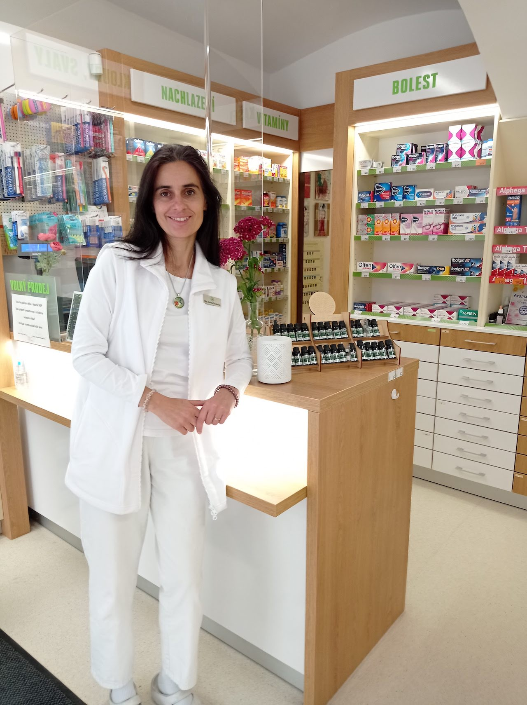
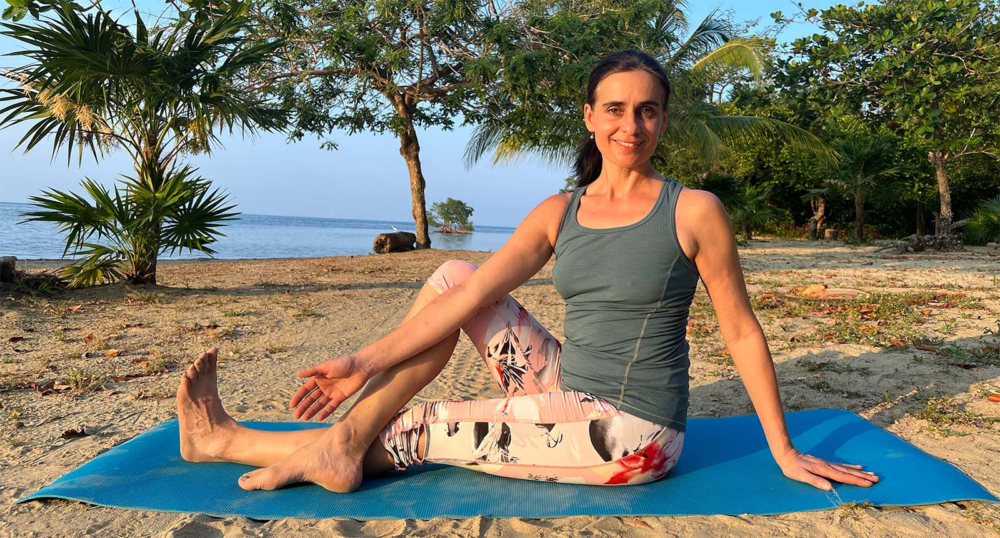
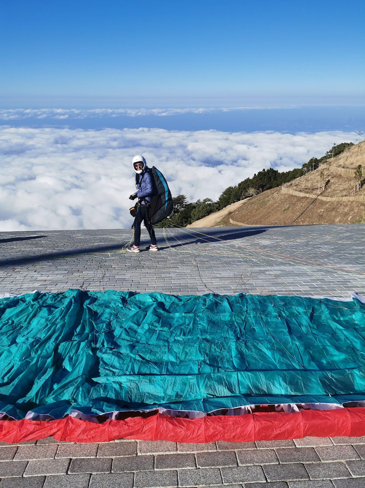
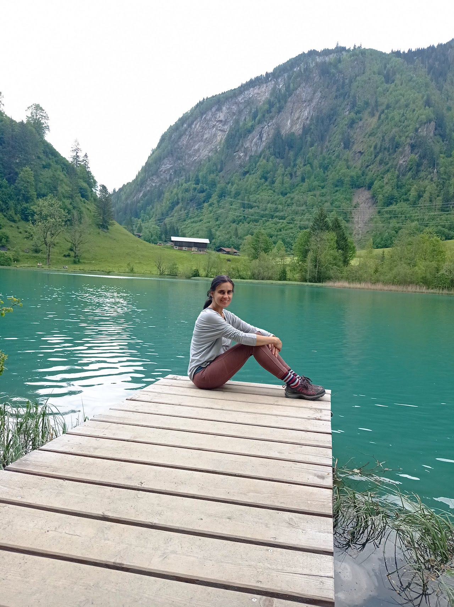

Profesní život:
Jsem lékárnice s dlouholetou praxí a momentálně pracuji v lékárně INEP v Praze. Má práce nespočívá jen v klasickém lékárnictví. Specializuji se také na aromaterapii a Bachovy květinové esence. Aromaterapií jsem se začala intenzivně zabývat v roce 2008, kdy jsem absolvovala Institut českých aromaterapeutů.
Jóga:
Vedle mé lékárenské praxe jsem také certifikovanou lektorkou jógy. Od roku 2018 pravidelně vyučuji skupinové i individuální lekce. Každá lekce kterou si se mnou přijdete zacvičit je jiná. Vnímám Vaše potřeby, zdravotní stav a naladění celé skupiny. Společně interagujeme a cvičíme tak, aby to dávalo smysl a lekci si všichni užili. Pokud se přihlásíte na individuální lekce, pomohu vám vytvořit vlastní cvičební plán.


Vztah k přírodě a paragliding:
Kromě své profesní dráhy mám hluboký vztah k přírodě. Ráda se toulám krajinou, vnímám krásy kolem a nacházím v nich inspiraci. Paragliding je jedním z mých vášní. Pro mě je to jedinečný způsob, jak se spojit s přírodou a cítit svobodu.
Každodenní všímavost a vděk:
Přemýšlíme a to v jednom kole. Sotva něco dokončíme, už máme hlavu plnou nových nápadů, povinností a často i negativních myšlenek. Osvobodit se z tohoto neustálého přemýšlení mi pomáhá vipassana meditace. Každý máme ve svém životě radostné, ale i ty náročnější období. Jsem si toho vědomá. Meidtace mi pomáhá být tady a teď.
Když mám krásný den, ráda se na chvíli zastavím a řeknu si: "To je dnes nádherný den. Život je dar."
Lékárnice, aromaterapeutka a lektorka jógy Mgr. Andrea Slováková

Napište mi
Máte zájem o lekci? Chcete se něco zeptat k lekcím, worshopům, nebo konzultacím?
Kontaktovat